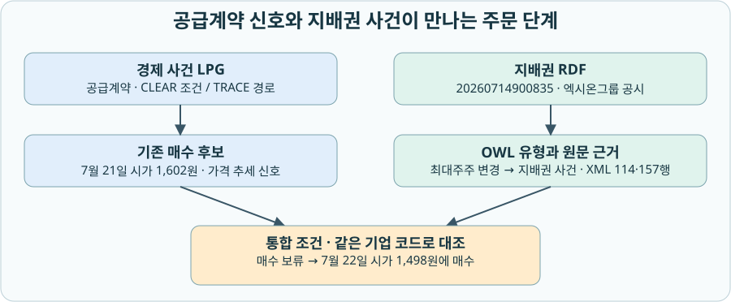

지배권 공시가 CLEAR·TRACE 매매에 미치는 영향
초록. 공급계약 그래프 기반 매매에 지배권 공시를 추가할 때 제목과 사건 근거가 주문 및 손익에 미치는 차이를 분석하였다. 기존 연구와 평가 날짜가 겹치지 않는 분기의 339종목을 대상으로 두 전략의 세 조건과 매수 후 보유를 비교하였다. 통합 조건은 각 전략에서 실제 최대주주 변경 공시로 매수 세 건을 하루 미뤘다. 세 주문 모두 가격 추세가 매수를 지시한 경우였다. 제목 조건은 더 많은 주문에 개입했고 이 표본에서 통합 조건보다 순수익률이 높았다. 여섯 전략의 순수익률은 매수 후 보유보다 낮았으며, 손실이 가장 커진 기간의 낙폭은 더 작았다. OWL 상위 유형을 직접 유형으로 대체해도 주문은 같았다.
1. 서론
이전 연구는 공급계약의 당사자·유효 기간·근거를 사용하여 CLEAR와 TRACE의 매매를 비교하였다 [1]. 후속 사전 분석에서는 지분 관련 공시가 일부 매수와 겹쳤으나, 그 매수에 최대주주 변경 근거가 연결되지 않았다 [2]. 제목에 지분 관련 표현이 있다는 사실과 지배권이 실제로 바뀌었다는 사실을 구별하려면 사건·원공시·정정·원문 근거를 함께 확인해야 한다.
본 연구는 공급계약 신호 생성 규칙을 보존하면서, 지배권 후보 공시를 제목으로 처리하거나 통합 지식그래프에서 확인하는 두 가지 개입을 비교한다. 기여는 시점별로 적용 가능한 지배권 사건을 찾아 기존 주문에 연결하는 방법, 동일한 체결 규칙 아래에서의 비교, 공시 접수번호와 주문을 재현할 수 있는 원장이다.
2. 관련 연구
공급계약 공시는 접수 전후 시장 반응을 관찰하는 데 사용되었고 [3], 기업 간 경제적 연결은 거래 상대에게 전달되는 정보의 경로를 검토하는 데 쓰였다 [4]. 본 연구는 시점별로 확인한 계약 공시와 지배권 사실이 신규 주문을 바꾸는지 평가한다. TRACE 원문은 자동 규칙 채굴과 빔 탐색을 원문 판정과 결합하였다 [5]. 이 연구는 기존 OpenDART 적용과 같이 코드로 후보를 선택하고 공시 근거를 확인한다.
3. 방법론
3.1 기존 공급계약 신호
CLEAR는 새 공시에 명시된 구매자와 기존 유효 계약을 대조해 공시를 선별한다. TRACE는 평가 시작 전 관측에서 관계 경로를 채굴하고, 발행 시점에 보이는 경로를 빔 탐색한다. 채택 규칙의 최소 지지도는 5, 최소 신뢰도는 0.60이며 빔 폭 8과 최대 깊이 3을 유지하였다. 규칙이 계약 사건에서 끝나는 경우, 당시 공개된 EXTRACTED_FROM 관계를 따라 근거 접수번호를 확인하였다. 공시 신호의 5거래일 합계가 0이면 기존의 20거래일 가격 추세를 적용하였다.
본실험에 LLM 호출은 없었다. 계약·지분 필드는 구조화된 추출기로 읽고, TRACE의 규칙 채굴·탐색·출처 확인과 CLEAR의 게이트는 코드로 실행하였다. 원문의 LLM 후보 재정렬과 텍스트 재판정은 적용하지 않았다.
3.2 두 그래프의 연결
공급계약 LPG에서 계약·기업 식별자와 기존 신호를 가져왔다. 같은 OpenDART 기업 코드로 지배권 RDF의 후보 공시를 조회하였다. 통합 조건은 지배권 사건과 원공시·정정 관계, 해당 공시 XML에 연결된 주장·근거를 확인하고, OWL 유형 계층에서 추론한 OwnershipEvent를 적격 사건의 기준으로 삼았다. 정정 제목이 붙은 문서는 주문일에 이미 공개된 원공시 연결과 자기 원문 근거를 요구하였다. 단순 보유 관측은 적격 유형에서 제외하였다.

3.3 세 비교 조건과 체결 규칙
① 기존 방식은 원래 목표 보유 상태를 체결한다. ② 제목 조건은 최근 5거래일 이내 반영 가능해진 5개 지분·지배권 공시군을 후보로 삼는다. ③ 통합 조건은 동일 후보 가운데 지배권 사건·근거가 확인되는 경우에만 개입한다. 두 추가 조건은 신규 매수만 한 거래일 미룬다. 다음 시가에 기존 신호를 다시 평가하며, 이미 사용한 제목 접수번호 또는 사건 ID는 반복해서 보류에 사용하지 않는다. 접수일만 확인된 공시는 다음 거래일 시가부터 반영한다.
예를 들어 오늘 기존 CLEAR가 매수를 지시했고 제목 조건이 분기보고서를 발견하면 하루 기다린다. 통합 조건은 그 보고서가 단순히 누가 주식을 보유했는지 보여주는지, 최대주주가 실제로 바뀌었다고 보고하는지까지 확인한다. 앞의 경우 매수는 예정대로 진행하고, 뒤의 경우 근거가 확인되면 하루 기다린다. 매도와 종료일 종가 청산의 규칙은 동일하며 편도 비용은 10bp다.
4. 실험과 결과
4.1 데이터셋과 시간 분리
기존 10~11월 평가와 겹치지 않는 2026년 7월 1일~9월 30일, 62거래일을 사용하였다. 7월 이전 공급계약 이력과 시작 전 21거래일의 종목 가격이 있는 종목을 선정하였다. 시작 전 자료가 부족한 20종목과 평가 중 일봉·거래 가능성이 완전하지 않은 18종목을 제외하여 339종목, 21,018개 종목·거래일을 구성하였다. TRACE는 6월 30일까지 결과가 공개된 931개 학습 관측만 사용하였다. 원래 연구 과정에서 7~9월을 접한 기록이 있으므로 이 결과는 시점을 분리한 후향적 백테스트로 해석한다.
최근 5거래일 창에 들어갈 수 있는 후보 공시는 2,150건이었다. 임원·주요주주 보고 1,408건, 대량보유 345건, 정기보고서 389건, 주식양수도 4건, 최대주주 변경 4건이다. 시장 전체 RDF에서 같은 분기에 원공시와 연결된 최대주주 변경 정정 7쌍의 원문을 별도로 재검증하였다. 일곱 쌍의 기업은 모두 평가 표본 밖에 있었다. 따라서 표본 안에서 정정으로 바뀐 주문은 관찰되지 않았다.
4.2 전략별 성과
종목별 초기 자본을 같게 배정하고 각 계정의 일별 자산을 합산하였다. 최대낙폭과 샤프비율은 이 합산 자산에서 산출하였다. 보유 비중은 전체 종목·거래일 중 주식 보유를 지시한 비율이다. 같은 구간 코스피 수익률은 −20.41%였고, 표본의 매수 후 보유 수익률은 +2.75%였다.
| 전략 | 순수익률 | 보유 대비 | 최대낙폭 | 샤프 | 보유 비중 | 체결 수 | 보류 수 |
|---|---|---|---|---|---|---|---|
| 매수 후 보유 | +2.75% | +0.00%p | -21.08% | 0.47 | 100.00% | 678 | 0 |
| CLEAR · 기존 | -3.61% | -6.36%p | -6.31% | -1.05 | 45.99% | 2,644 | 0 |
| CLEAR · 공시 제목 | -2.94% | -5.70%p | -5.85% | -0.89 | 44.99% | 2,526 | 211 |
| CLEAR · 통합 그래프 | -3.63% | -6.38%p | -6.33% | -1.06 | 45.97% | 2,644 | 3 |
| TRACE · 기존 | -3.62% | -6.37%p | -6.32% | -1.08 | 45.58% | 2,644 | 0 |
| TRACE · 공시 제목 | -3.01% | -5.77%p | -5.92% | -0.93 | 44.57% | 2,524 | 212 |
| TRACE · 통합 그래프 | -3.64% | -6.39%p | -6.34% | -1.09 | 45.57% | 2,644 | 3 |

통합 조건은 제목 조건보다 CLEAR에서 0.69%p, TRACE에서 0.63%p 낮았다. 통합 조건의 성과는 두 기존 전략보다 각각 약 0.02%p 낮았다. 여섯 전략 모두 매수 후 보유보다 순수익률이 낮았고, 주식 보유 비중 약 45%에서 최대낙폭도 작았다. 이 비교만으로 낙폭 감소를 지배권 정보의 효과로 설명할 수 없다.
제목 조건의 매수 보류 211건과 212건 가운데 각각 152건이 다음 시가에 체결되었다. 나머지 59건과 60건은 신호가 사라져 체결되지 않았다. 통합 조건에서 보류한 세 주문은 두 전략에서 모두 다음 시가에 체결되었다. OWL 상위 유형을 RDF에 명시된 ControllerChange로 대체한 대조 실행은 통합 조건과 체결·성과가 모두 같았다.
4.3 종목별 성과와 바뀐 주문
아래 표는 두 전략의 통합 조건에서 매수가 바뀐 세 종목이다. 전체 339종목의 비용 후 성과는 별도 원장에 제공한다. 339종목별 성과 CSV
| 종목 | 매수 후 보유 | CLEAR · 기존 | CLEAR · 공시 제목 | CLEAR · 통합 그래프 | TRACE · 기존 | TRACE · 공시 제목 | TRACE · 통합 그래프 |
|---|---|---|---|---|---|---|---|
| 스페코 | -7.20% | -23.77% | -30.23% | -30.23% | -23.77% | -30.23% | -30.23% |
| 엑시온그룹 | +8.48% | -61.53% | -62.20% | -58.86% | -53.04% | -53.86% | -49.78% |
| 그린생명과학 | +16.42% | +8.27% | +4.83% | +4.83% | +8.27% | +4.83% | +4.83% |
4.4 원문 근거와 주문 체결
세 사례 모두 5거래일 공급계약 신호 합계가 0이었다. CLEAR와 TRACE의 기존 가격 추세 규칙에서 나온 매수 후보를 통합 조건이 하루 미뤘다. 각 사례의 기준·통합 조건은 같은 날 같은 시가에 매도하였다. 아래 손익 차이는 해당 매수부터 첫 매도까지의 비용 후 수익률 차이다.
| 종목과 원문 | 기존 매수 시가 | 통합 매수 시가 | 공통 매도 시가 | 거래 손익 차이 |
|---|---|---|---|---|
| 스페코 2026-07-15 최대주주 변경 변경 사유 114행 · 변경일 157행 | 7월 23일 1,664원 | 7월 24일 1,818원 | 7월 29일 1,566원 | -7.96%p |
| 엑시온그룹 2026-07-14 최대주주 변경 변경 사유 114행 · 변경일 157행 | 7월 21일 1,602원 | 7월 22일 1,498원 | 7월 23일 1,088원 | +4.71%p |
| 그린생명과학 2026-07-22 최대주주 변경 변경 사유 114행 · 변경일 157행 | 7월 23일 1,980원 | 7월 24일 2,045원 | 8월 27일 2,215원 | -3.55%p |
엑시온그룹은 다음 날 시가가 낮아 손실을 일부 줄였다. 스페코와 그린생명과학은 다음 날 더 높은 시가에 들어가 손익이 악화되었다. 세 원공시의 XML 해시와 변경 사유·변경일 위치를 EC2에서 추출 결과와 대조하였다. 정정본 연결은 이 세 주문의 보류 사유에 포함되지 않았다. 제목 조건에서 매수 보류 후보로 쓰인 정정 표기 접수번호는 두 전략을 합쳐 36개로, 이 집계에는 정기보고서·대량보유 등의 정정도 포함된다. 사례 근거와 시장 전체의 정정 대조
5. 논의와 한계
이 표본에서 통합 그래프가 한 일은 보유 관측을 변경 사건과 구별해 개입을 줄이고 세 신규 진입을 늦춘 것이다. 이 진입은 가격 추세에서 나왔으므로, 공급계약 신호와 지배권 변경을 결합해 매매 효율이 개선되었다는 증거는 확인되지 않았다. 제목 조건의 높은 수익률에는 더 많았던 매수 취소와 낮은 시장 노출이 함께 작용했다. 시장 전체에서 확인한 정정 7쌍은 평가 표본 밖에 있었으므로 정정 근거의 손익 기여는 이 표본에서 추정할 수 없다.
이 연구는 평가 중 거래 가능한 가격이 확보된 종목에 조건부로 성과를 비교한다. 날짜 단위 접수 기록, 사후 구축된 그래프, 체결가·거래비용 가정에도 한계가 있다. 규칙 고정 이후 자료에서 정정과 공급계약 신호가 같은 주문에 개입하는 사례를 확보해야 두 정보의 결합 효과를 평가할 수 있다.
부록 · EC2 재현과 원장
동일한 계약 그래프, 종목별 일봉 폴더 두 개와 EC2의 RDF 스냅샷을 사용한다. 정정 쌍 검증에는 지분 추출 JSONL과 원문 보관 위치가 필요하다. 입력 해시는 요약 JSON에 보존하였다.
PYTHONPATH=src python3.11 scripts/backtest_governance_integration.py "$GRAPH" "$ARCHIVE" "$LATER" "$RDF" "$OUTPUT" --ownership "$OWNERSHIP" --bucket "$BUCKET"재현 코드 · 조건별 체결 원장 · 보류·재판정 원장 · 종목별 성과 · 전체 결과·원문 근거 JSON · 요약과 입력 해시
참고문헌
- FINTOS. (2026). CLEAR와 TRACE — OpenDART 공시를 활용한 매매 전략 비교. 연구 글
- FINTOS. (2026). 공급계약과 지배권 공시의 시점별 겹침. 사전 분석
- 우민철, 박수철. (2017). 중요 공시에 대한 시장반응－단일판매 공급계약 공시를 대상으로－. 경영연구, 32(1), 205–229. DOI
- Cohen, L., & Frazzini, A. (2008). Economic links and predictable returns. The Journal of Finance, 63(4), 1977–2011. DOI
- Ding, Q., et al. (2026). TRACE: Temporal rule-anchored chain-of-evidence on knowledge graphs for interpretable stock movement prediction. arXiv:2603.12500v1. 프리프린트